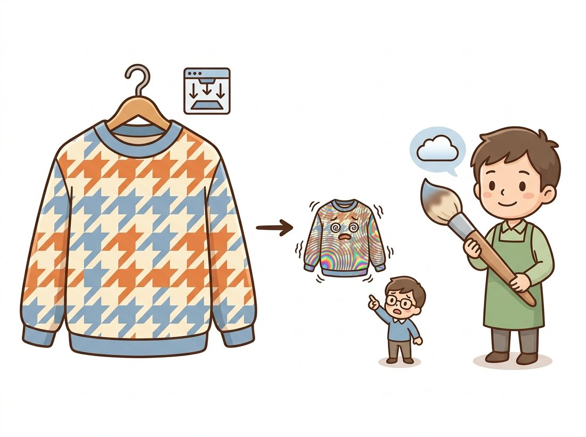

"People ask what lies between two pixels. I have four answers, ranked by how long you are willing to wait for them."
A Perfectionist Bicubic Interpolator
Interpolation is the act of reconstructing a continuous image from discrete samples just long enough to read one value off it, and every interpolation method is just convolution with a different reconstruction kernel. Nearest neighbor, bilinear, bicubic, and Lanczos are four points on a single dial that trades blockiness against blur against ringing against compute. There is no universally best setting, but there are well-understood right choices for each job, and one famous trap (downscaling without an anti-alias filter) that this section will teach you to never fall into.
The previous section gave us matrices that move pixel coordinates anywhere we like, and therein lies the problem: "anywhere" is almost never an integer grid position. Rotate an image by 15 degrees and the pixel that should land at output position $(83, 41)$ comes from input position $(74.38, 52.91)$, where no sample exists. The image, as established in Chapter 1, is a grid of point samples of a continuous light field; between the samples there is officially nothing. Interpolation manufactures the missing value, and the way it does so determines how sharp, how smooth, and how honest your warped image is.
1. Interpolation Is Convolution Intermediate
Every method in this section fits one formula. To estimate the image value at fractional position $x$ (we work in 1D first; 2D is two nested applications), place a kernel $k$ at $x$ and take a weighted sum of the nearby samples $f[i]$:
$$ \hat{f}(x) \;=\; \sum_{i} f[i]\; k(x - i) $$This is exactly the convolution machinery of Chapter 3, evaluated at a non-integer location. The kernel's support (how many samples it touches) sets the cost; the kernel's shape sets the quality. Sampling theory from Chapter 4 tells us the ideal reconstruction kernel for a band-limited signal is the infinite sinc function; everything in practice is a cheap, finite approximation to that ideal, and each approximation fails in its own characteristic way.
Figure 5.3.1 plots the four kernels we cover. Keep it in view as you read: nearly every visual artifact in resized images can be diagnosed by looking at the shape of the kernel that produced it.
2. The Four Kernels Intermediate
2.1 Nearest neighbor: just copy
The box kernel assigns the value of whichever sample is closest: $\hat{f}(x) = f[\mathrm{round}(x)]$. It is the fastest possible method, introduces no new values, and looks terrible on photographs: diagonal edges become staircases and smooth gradients become bands. Yet it is the only correct choice for one important class of images: label maps and masks. A segmentation mask containing class IDs $\{0, 1, 2\}$ must never be bilinearly resized, because averaging class 0 (background) with class 2 (vehicle) produces class 1 (pedestrian) along every boundary, a phantom-class bug that has burned countless practitioners and will matter again when we resize masks in Chapter 24.
2.2 Bilinear: the workhorse
The tent kernel performs linear interpolation between the two bracketing samples; applied along both axes it reads four neighbors and blends them by area. If the fractional position within the $2 \times 2$ cell is $(a, b)$ with $a, b \in [0, 1)$:
$$ \hat{f} \;=\; (1-a)(1-b)\,f_{00} \;+\; a(1-b)\,f_{10} \;+\; (1-a)b\,f_{01} \;+\; ab\,f_{11} $$Each sample's weight is the area of the sub-rectangle diagonally opposite it, a picture worth drawing once in your notebook and never forgetting. The intuition is "closeness wins": land right on top of $f_{00}$ (so $a, b \to 0$) and its weight $(1-a)(1-b)$ goes to 1 while the others vanish, exactly what you want. Bilinear is continuous (no blocking), cheap (4 reads, 3 multiply-adds per channel), and slightly blurry, since the tent kernel attenuates high frequencies noticeably. It is the default interpolation in most libraries and in nearly all real-time and GPU work; texture units in graphics hardware implement it in silicon.
2.3 Bicubic: the photographer's default
The cubic convolution kernel of Keys (1981) reads a $4 \times 4$ neighborhood and fits a smooth piecewise-cubic curve. The 1D kernel, parameterized by $a$:
$$ k(t) = \begin{cases} (a+2)|t|^3 - (a+3)|t|^2 + 1 & |t| \le 1 \\ a|t|^3 - 5a|t|^2 + 8a|t| - 4a & 1 < |t| < 2 \\ 0 & \text{otherwise} \end{cases} $$The negative lobes visible in Figure 5.3.1 give bicubic its mild edge-enhancing quality: output values can overshoot the input range slightly, which reads as sharpness. The parameter $a$ tunes the lobe depth, and here hides a notorious cross-library gotcha: OpenCV uses $a = -0.75$ while Pillow uses $a = -0.5$ (the value Keys derived as optimal). "Bicubic" therefore names two different filters depending on which library resized your image. The gap is not academic: resize the same photo to half size with both, and individual pixels routinely disagree by 5 to 10 levels out of 255, with sharp edges differing more. That is invisible to your eye and enormous to a model trained on one library and served with the other, which is exactly how this single sign of one number ends up shifting the metrics of trained models, as the research-frontier callout below recounts.
2.4 Lanczos: the archivist's choice
The Lanczos kernel is the ideal sinc multiplied by a window that tapers it to zero after $a$ lobes:
$$ L(t) = \begin{cases} \operatorname{sinc}(t)\,\operatorname{sinc}(t/a) & |t| < a \\ 0 & \text{otherwise} \end{cases} \qquad \operatorname{sinc}(t) = \frac{\sin(\pi t)}{\pi t} $$
OpenCV's INTER_LANCZOS4 uses $a = 4$ (an $8 \times 8$ neighborhood); Pillow's LANCZOS uses $a = 3$. This is the closest practical approximation to the ideal reconstruction filter of Chapter 4, and it preserves fine detail best on upscales. The price is ringing: those oscillating negative lobes can paint faint halos around high-contrast edges, conspicuous around text and graphics. Photographic archives and astronomy pipelines accept the halos for the detail; user-interface code usually does not.
The progression nearest → bilinear → bicubic → Lanczos is the progression of better sinc approximations, and the sinc has negative lobes. Kernels without them (box, tent) can only average, so they can only blur. Kernels with them can locally subtract, which restores edge contrast but also overshoots into halos. Sharpness and ringing are not separate properties to optimize independently; they are the same lobes seen from two sides. Choosing an interpolation method is choosing how much of one you will trade for the other.
3. Implementing Bilinear From Scratch Intermediate
The bilinear sampler below is the heart of every warp we write in this chapter; Section 5.4 will call it on millions of coordinates at once, so we write it vectorized from the start. It accepts arrays of fractional coordinates and returns sampled values, grayscale for clarity:
import numpy as np
def bilinear_sample(img, xs, ys):
"""Sample a grayscale image at fractional coords (vectorized).
img: (H, W) float array. xs, ys: arrays of x and y coordinates.
Returns an array shaped like xs with interpolated values.
"""
h, w = img.shape
x0 = np.clip(np.floor(xs).astype(int), 0, w - 2) # left column
y0 = np.clip(np.floor(ys).astype(int), 0, h - 2) # top row
a = np.clip(xs - x0, 0.0, 1.0) # horizontal fraction
b = np.clip(ys - y0, 0.0, 1.0) # vertical fraction
f00 = img[y0, x0 ] # top-left
f10 = img[y0, x0 + 1] # top-right
f01 = img[y0 + 1, x0 ] # bottom-left
f11 = img[y0 + 1, x0 + 1] # bottom-right
return ((1 - a) * (1 - b) * f00 + a * (1 - b) * f10
+ (1 - a) * b * f01 + a * b * f11)
# Sanity check on a tiny ramp image: value at (0.5, 0.5) should be
# the average of the four corner samples 0, 1, 10, 11 = 5.5
ramp = np.array([[0., 1.], [10., 11.]])
print(bilinear_sample(ramp, np.array([0.5]), np.array([0.5])))
clip calls implement a "replicate border" policy at the image edge; Section 5.4 discusses border modes properly.[5.5]
Our sampler plus a bicubic and a Lanczos variant would run to 60+ lines of NumPy, and a fast version (fixed-point weights, single-instruction-multiple-data (SIMD) vectorization, multi-threading, multi-channel) to far more. OpenCV exposes the entire menu through one function and one flag:
# One cv2.resize call covers every kernel through the interpolation flag.
# Use INTER_AREA when shrinking (alias-free) and INTER_CUBIC when enlarging;
# the flag is the only thing that changes between the two cases.
small = cv2.resize(img, (640, 480), interpolation=cv2.INTER_AREA) # downscale
big = cv2.resize(img, None, fx=3, fy=3, interpolation=cv2.INTER_CUBIC) # upscale
That is roughly 60 lines reduced to 1 per call. Internally OpenCV precomputes per-row kernel weights in fixed-point arithmetic, vectorizes with SIMD intrinsics, parallelizes across rows, and (for INTER_AREA) switches to the pixel-area averaging that makes downscales alias-free. For training pipelines, torchvision.transforms.Resize(..., antialias=True) is the GPU-batched equivalent.
4. Comparing the Kernels in Practice Beginner
A fair comparison needs ground truth, so we use the classic protocol: shrink an image, blow it back up with each method, and measure fidelity to the original with the peak signal-to-noise ratio (PSNR), introduced in Section 1.5:
# Shrink-then-restore benchmark: clean-downscale once, then upscale back
# with each kernel and score fidelity to the original with PSNR. Timing
# each call exposes the quality-versus-compute trade-off per kernel.
import cv2, time
img = cv2.imread("detail_rich.jpg", cv2.IMREAD_GRAYSCALE) # 1024 x 1024
small = cv2.resize(img, None, fx=0.25, fy=0.25,
interpolation=cv2.INTER_AREA) # clean 4x shrink
flags = {"nearest": cv2.INTER_NEAREST,
"bilinear": cv2.INTER_LINEAR,
"bicubic": cv2.INTER_CUBIC,
"lanczos4": cv2.INTER_LANCZOS4}
for name, flag in flags.items():
t0 = time.perf_counter()
up = cv2.resize(small, img.shape[::-1], interpolation=flag)
dt = (time.perf_counter() - t0) * 1000
print(f"{name:9s} PSNR {cv2.PSNR(img, up):5.2f} dB {dt:5.1f} ms")
nearest PSNR 26.94 dB 0.8 ms bilinear PSNR 30.11 dB 1.6 ms bicubic PSNR 31.07 dB 3.9 ms lanczos4 PSNR 31.32 dB 9.7 ms
The pattern in Output 5.3.3a generalizes well: bilinear over nearest is a large, cheap win; bicubic over bilinear is a modest win photographers care about; Lanczos over bicubic is a subtle win that matters mostly for archival upscales and text. Table 5.3.1 summarizes the decision space, including the two special-purpose rows that the benchmark cannot show.
The benchmark above scores how faithfully each kernel reconstructs a continuous signal from the samples it has, and it is easy to read the rising PSNR as "better kernels recover more real detail." They do not. None of the four classic kernels invents information; they only redistribute the samples already present. Enlarge a 100×100 crop to 1000×1000 with Lanczos and you get a smoother, sharper-looking version of the same 10000 measurements, never the license-plate digits or face that were never sampled. The "enhance until the reflection is readable" trope of crime television is, with these kernels, physically impossible: the Nyquist limit of Chapter 4 caps what any interpolation can know. The learned super-resolvers in the research-frontier callout below do add detail, but it is plausible hallucination conditioned on training data, not recovered measurement, which is why fidelity-critical work (forensics, metrology) still refuses them.
| Method | Neighborhood | Character | Use it for |
|---|---|---|---|
| Nearest | 1×1 | blocky, value-preserving | label maps, masks, pixel art |
| Bilinear | 2×2 | smooth, slightly soft | real-time warps, GPU pipelines, default |
| Bicubic | 4×4 | sharper, mild overshoot | photo editing, moderate upscales |
| Lanczos | 6×6 / 8×8 | sharpest, can ring | archival upscales, fine detail, text |
Area (INTER_AREA) | scale-dependent | alias-free averaging | any downscale |
5. The Downscaling Trap Advanced
Everything so far assumed we are reading values between samples, upscaling or warping at roughly constant scale. Downscaling is a different physics problem. Shrinking an image by 8× means the new sampling grid is 8× coarser, and the sampling theorem from Chapter 4 is unambiguous: frequencies above the new, lower Nyquist limit must be removed before resampling, or they will fold back as aliasing. A bilinear or bicubic kernel evaluated at the new sample positions still only reads 2 or 4 input pixels per axis; at an 8× shrink it simply skips over 6 of every 8 pixels, and the skipped detail reappears as moiré patterns, shimmering textures, and crawling edges, the failure mode the illustration below dramatizes.

The correct procedure is to low-pass filter to the new band limit, then sample, and good libraries fuse the two: cv2.INTER_AREA averages the source pixels covered by each destination pixel, while torchvision's antialias=True stretches the reconstruction kernel by the scale factor. The same idea, executed octave by octave, is the Gaussian pyramid from Chapter 4. Whenever you shrink by more than about 2× with anything other than these, you are aliasing, whether you notice it or not.
Aliasing from careless downscaling can be invisible in a single thumbnail and still poison downstream systems: it shifts feature statistics, adds phantom textures that confuse matching (Section 5.5), and changes the inputs that neural networks train on. If your pipeline shrinks images, audit which kernel does it and whether an anti-alias step exists. The bug is silent, the fix is one flag.
Who: A platform engineer at a fashion e-commerce marketplace.
Situation: Seller photos (typically 4000×3000) are downscaled to 500×375 thumbnails for category pages. The thumbnail job used cv2.resize(..., interpolation=cv2.INTER_LINEAR) because it was the default and fast.
Problem: Merchandisers reported that woven fabrics, herringbone jackets, knit sweaters, window screens in lifestyle shots, displayed garish rainbow moiré in thumbnails that looked nothing like the product. Customer-facing A/B data showed measurably lower click-through on affected categories.
Decision: The engineer reproduced the artifact, recognized 8× decimation with a 2-pixel kernel as textbook aliasing, and switched the job to INTER_AREA, with a Lanczos pass reserved for the rare upscales.
Result: Moiré vanished across the catalog; the re-rendered categories recovered their click-through. Total code change: one constant.
Lesson: The interpolation flag is not a detail. Downscaling is sampling, sampling needs an anti-alias filter, and the textile section of any catalog is a high-frequency test pattern in disguise.
6. Interpolation and Machine Learning Advanced
A modern wrinkle: resizing is now part of nearly every model's input contract, so interpolation choices silently shape what networks learn and how they are scored. Three concrete consequences are worth carrying forward. First, masks versus images: augmentation pipelines must resize images with bilinear or bicubic but masks with nearest, and frameworks let you specify both (a distinction we will rely on in Chapter 21). Second, train-serve skew: if training resized with Pillow bicubic ($a=-0.5$) and production resizes with OpenCV bicubic ($a=-0.75$), the model sees a slightly different image distribution in production; reproducible pipelines pin the resize implementation, not just the size. Third, evaluation: generative-model metrics compare statistics of resized images, so the resize kernel becomes part of the metric itself, a story told in the callout below and continued when we reach FID in Chapter 37.
Parmar, Zhang, and Zhu's clean-fid work ("On Aliased Resizing and Surprising Subtleties in GAN Evaluation", CVPR 2022) showed that published FID scores for the same generative model could differ by amounts larger than claimed state-of-the-art gaps purely because different codebases downscaled evaluation images with different, often aliasing, kernels; the community standardized on anti-aliased resizing in response. The ecosystem followed: torchvision migrated its transforms so that antialias=True became the effective default behavior in v0.17 (2024), closing a long-standing tensor-versus-PIL mismatch. On the reconstruction side, the sinc ideal now has learned competitors: single-step diffusion super-resolvers such as SinSR (CVPR 2024) and OSEDiff (NeurIPS 2024) upscale with hallucinated-but-plausible detail in one network evaluation, fast enough to challenge Lanczos in offline pipelines. Classical kernels remain the standard where fidelity to the actual signal is non-negotiable; the learned upscalers win where perceptual quality is the product. Chapter 7 picks up that thread.
One more perspective ties this section to the chapter's arc. We treated interpolation as reading a value at one fractional point, but a warp does this for every output pixel at once, and the pattern of fractional positions varies across the image: a perspective warp compresses some regions (locally a downscale, aliasing risk) while stretching others (locally an upscale, blur risk). Production warpers therefore sometimes blend strategies or warp through an image pyramid from Chapter 4. With values-at-fractional-coordinates solved, we are ready to assemble the full warping algorithm in Section 5.4.
The Lanczos kernel is named for Cornelius Lanczos, a Hungarian-American mathematician who at various points worked as Einstein's assistant, co-authored (with Danielson, in 1942) a recursive trigonometric-interpolation lemma now recognized as a forerunner of the fast Fourier transform two decades before Cooley and Tukey, and developed the resampling window in his 1956 numerical-analysis book. The image-processing community adopted the name; Lanczos himself never resized a JPEG.
A segmentation mask uses labels 0 (road), 1 (lane marking), and 2 (vehicle). It is downscaled 2× with bilinear interpolation and then thresholded back to integers with rounding. Describe precisely where in the image label-1 pixels can appear that were never lane markings, and why nearest-neighbor avoids this. Then explain why one-hot encoding the mask, resizing each channel bilinearly, and taking an argmax is also acceptable, and what it does at boundaries that nearest-neighbor does not.
Implement the Keys cubic kernel $k(t)$ from this section as a Python function of $t$ and $a$, then build a 1D bicubic resampler that upscales a row of pixels by an arbitrary factor using 4 taps. Verify that with $a = -0.75$ your output matches cv2.resize with INTER_CUBIC on the same row (to within rounding), and that with $a = -0.5$ it matches Pillow's Image.resize(..., Image.BICUBIC). Report the maximum absolute pixel difference between the two libraries' outputs on a real photo row.
Create a synthetic image of concentric rings $I(x, y) = \sin(r^2 / 40)$ (a zone plate), which sweeps all spatial frequencies. Downscale it 6× with INTER_NEAREST, INTER_LINEAR, and INTER_AREA, then upscale each result back and compute the 2D FFT magnitude (Chapter 4 tools) of the difference from a clean reference. Identify the spurious low-frequency energy in the first two and explain, citing the Nyquist argument, why it appears at those particular frequencies. Which radius in the original corresponds to the new Nyquist limit?